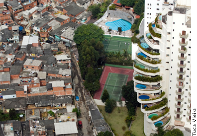

* Segregação Socioespacial *
Aluna: Anny Karoline - nº 04 - 3BI

Segundo Manuel Castells, o processo de segregação espacial é o resultado da distribuição das diversas classes sociais de acordo com o nível social dos indivíduos. Na imagem apresentada, é visível a acirradíssima divisão que ocorre entre indivíduos de alta e baixa renda. É possível também notar um caso de atitude blasé, quando os indivíduos que moram no prédio podem presenciar de perto o descaso com o menos favorecidos, mas isso não os afeta diretamente e eles parecem viver em uma cúpula. A partir disso, é notável a necessidade de um processo de reorganização espacial para que não ocorra o descaso com pessoas de um baixo nível social.